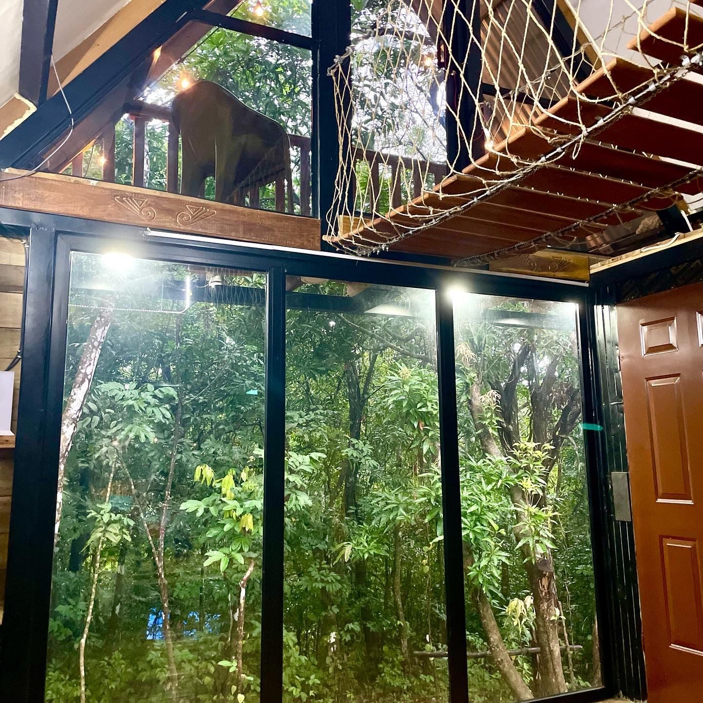
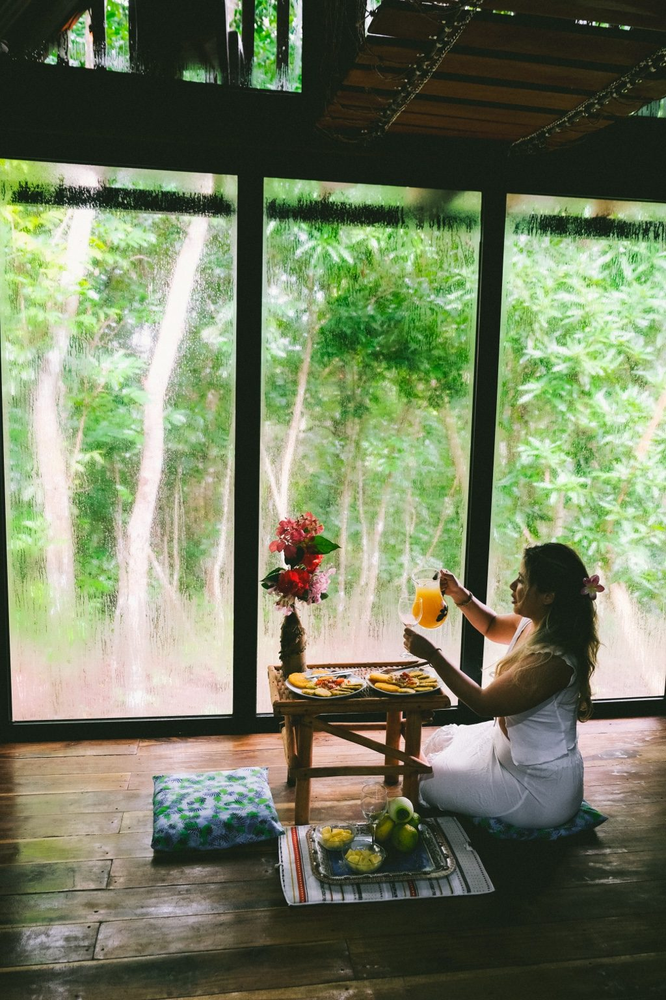

Aqeel Cabin
Cabaña privada con cocina completa, terraza, hamacas, BBQ, estacionamiento y Starlink.
Ver cabaña en AirbnbNaturaleza privada en Panamá
Cabaña, domo junto al río, cascadas, vida silvestre y una experiencia auténtica en la naturaleza.
Ver disponibilidadDos alojamientos privados en la misma propiedad, aproximadamente a 150 metros de distancia, rodeados de selva tropical y acceso al río.

Cabaña privada con cocina completa, terraza, hamacas, BBQ, estacionamiento y Starlink.
Ver cabaña en Airbnb
Domo privado junto al río con cama queen, aire acondicionado, cocineta, baño, terraza y BBQ.
Ver domo en AirbnbDesde Penonomé, tome un autobús con dirección a Churuquita Grande. Después de bajarse, hay una caminata aproximada de 20 minutos por el camino de grava hasta la propiedad. Confirme el punto exacto de bajada por WhatsApp antes de viajar.
En automóvil se puede llegar directamente; el último kilómetro es un camino de grava. Hay estacionamiento gratuito.
Hay dos pequeños supermercados chinos relativamente cerca para compras básicas. Para una compra más completa, los supermercados grandes de Penonomé están aproximadamente a 30 minutos.
También hay restaurantes locales cerca de la zona y una mayor selección de restaurantes en Penonomé, aproximadamente a 30 minutos.
La propiedad está en Churuquita Grande, Coclé, aproximadamente a 30 minutos de Penonomé.
Abrir Google MapsAqeel Cabin & Jungle River Dome lleva el nombre de nuestro hijo Aqeel. La propiedad nació como parte de su viaje familiar a Panamá y se convirtió en un lugar donde otras familias pueden reconectarse con la naturaleza.
Escriba su pregunta en español o inglés. El asistente utiliza la información verificada de la propiedad.
Envíe la fecha exacta, número de noches, número de huéspedes y si desea la cabaña o el domo.